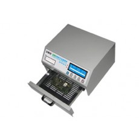

With the prospect of soldering 0.5mm pitch SMD’s I’m going to bite the bullet and order some proper equipment.
Found a great site called smart-prototyping who supply a lot of decent prototyping gear for at or below your normal eBay trader, ordered one of those “el-cheapo” re-flow ovens and a proper stereo SMD inspection microscope.

the current USB Microscope I use for inspection is quite frankly crap as it suffers really bad illumination and I gave up using it a year ago and resorted to a hand magnifier, this was 0805 and SOIC technology so I could get away with it then but this 0.5mm stuff will require a bit more I’m guessing.
Looking at the web-site they seem to be comparable in costs to Seeed Studio for PCB production, and it also looks like they can engineer cases (whoo-hoo!) so I may give them a try when I get closer to a finished prototype.
I’ve also ordered a proper Inductance meter off eBay (good supplier and a middle of the range unit, not the cheapest and seemed to have good reviews and sub 1% accuracy)